Arkunay no empieza por el plano. Empieza por la lectura del ser que habitará el espacio.
Volumetría conceptual del caso piloto SATO. Orbita la casa con el cursor — o con el dedo — y recorre sus cuatro decisiones rectoras: cada una es trazable a un eje del habitante. La arquitectura no se mira: se lee.
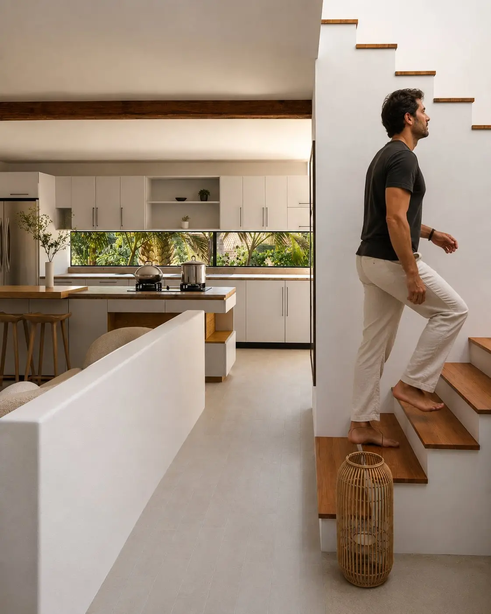
Trabajamos bajo el marco de la Arquitectura Ontognóstica — del griego onto, ser, y gnosis, conocimiento experiencial. Diseñamos espacios donde el ser llega a conocerse a través de la experiencia encarnada de habitar. La casa no es un objeto: es un instrumento de autoconocimiento.
Un laboratorio investiga antes de afirmar. Por eso cada proyecto Arkunay verifica la Tríada y se somete al sistema SATO: un método que lee al habitante, traduce esa lectura a demandas espaciales y deja cada decisión abierta al escrutinio profesional.
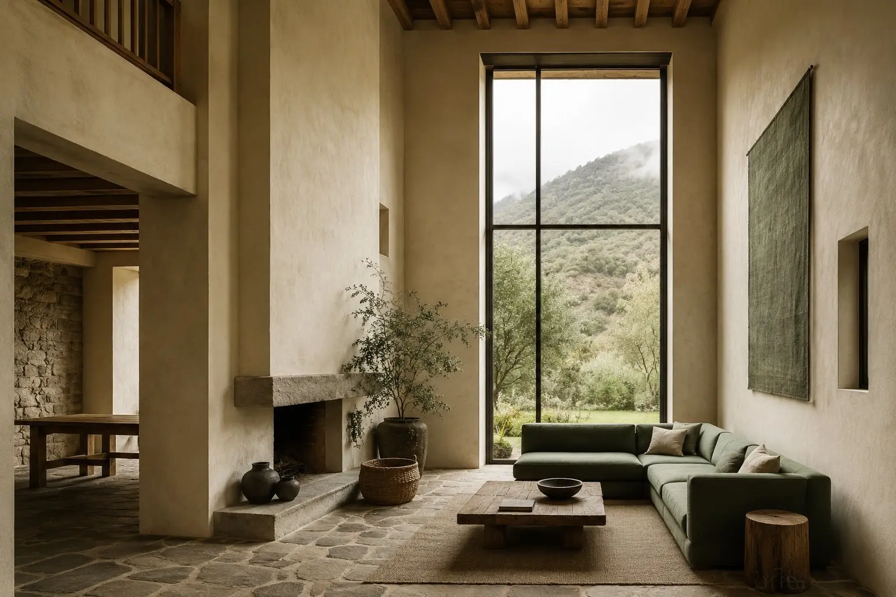
Cada decisión —la altura de un techo, la dirección de una ventana, el peso de un muro— modifica cómo el cuerpo se mueve, cómo el afecto se regula y cómo el sentido se orienta.
Por eso no diseñamos para una fotografía. Diseñamos para la experiencia continuada de quien va a vivir ahí.
Tres estados que el habitante experimenta de forma simultánea en el espacio. Cada decisión de diseño los verifica los tres.
La sustancia real del espacio: estructura, materialidad, tectónica, la medida del cuerpo que se mueve. Lo que se toca y sostiene.
La regulación afectiva del entorno: luz, atmósfera, acústica, refugio. Lo que sostiene emocionalmente a quien habita.
La orientación de sentido: jerarquía, vacío, umbral, símbolo sobrio. Lo que permite que el espacio comunique intención.
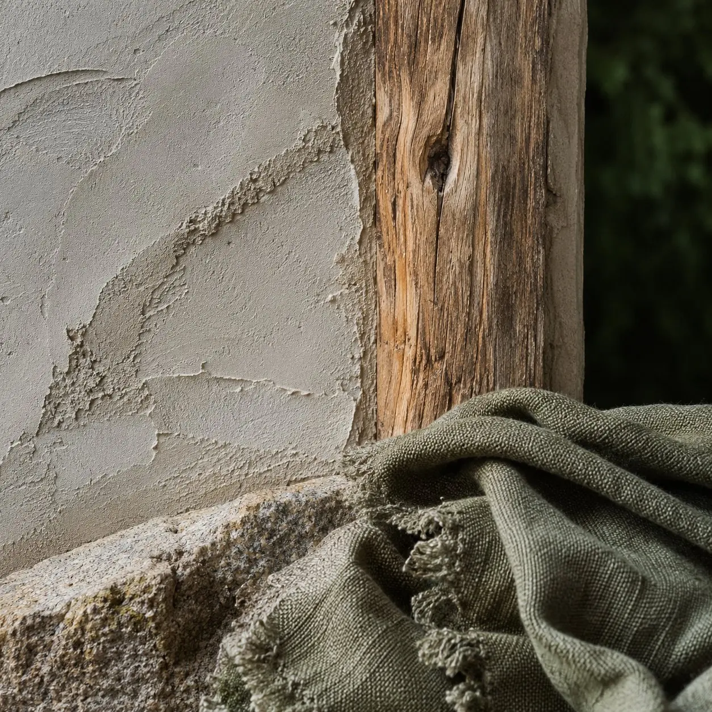
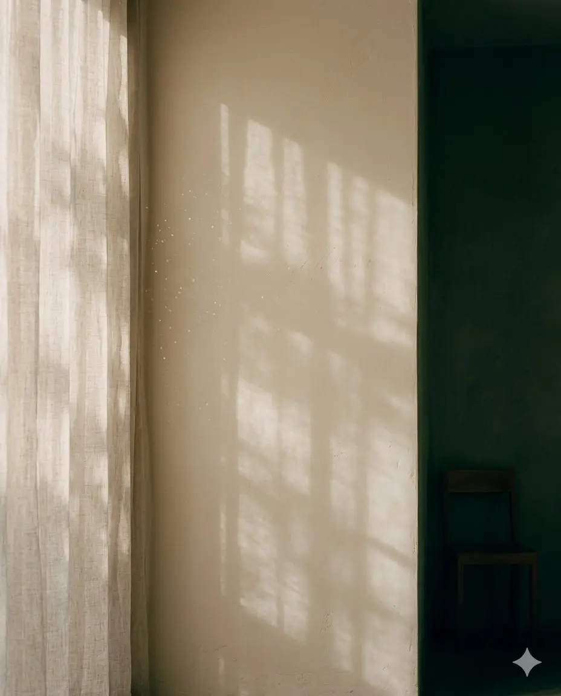
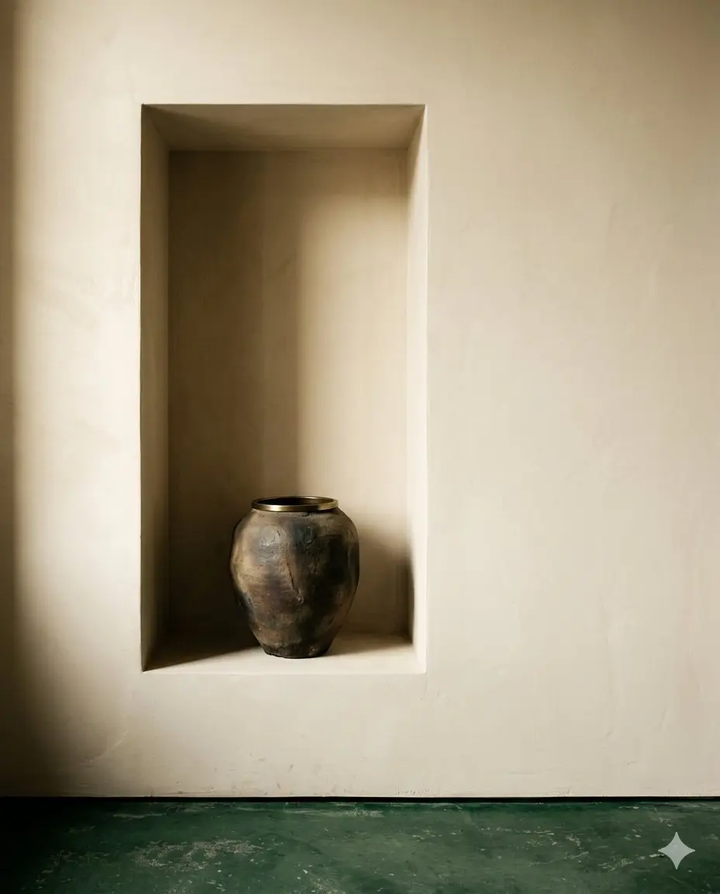
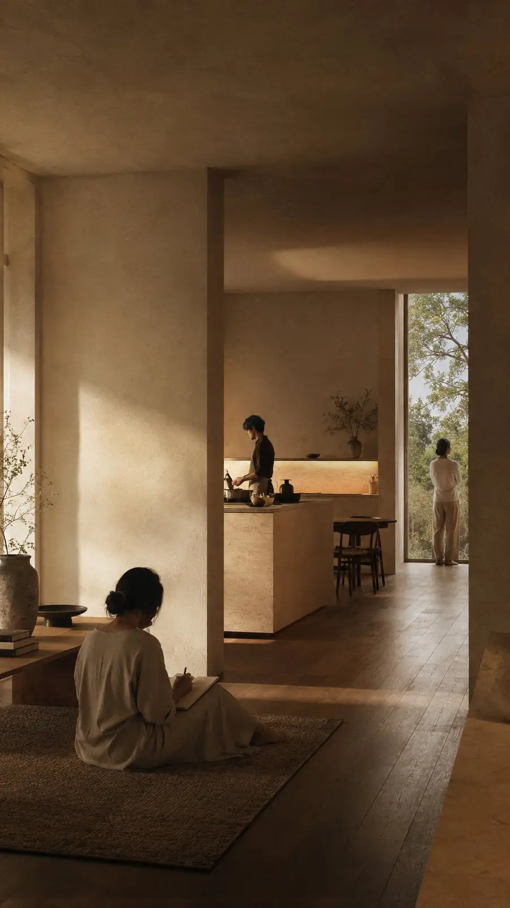
Diseño residencial de campo y montaña, villas y refugios — con la luz como material de proyecto.
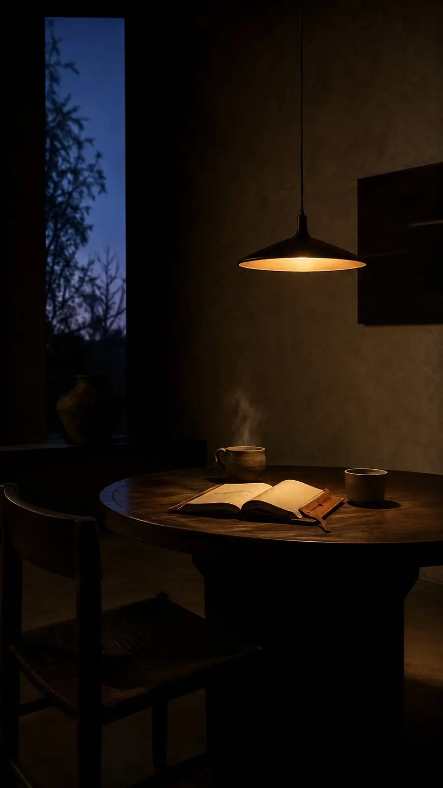
SATO —Sistema de Autoconocimiento Triádico Ontognóstico— lee a la persona en sus tres ejes: cuerpo, alma y espíritu. Esa lectura se traduce en demandas espaciales concretas.
El resultado es una arquitectura que no responde a una moda, sino a quien la va a vivir.
Trayectoria, formación, filosofía y obra del arquitecto detrás de Arkunay.
El instrumento que lee al habitante y traduce esa lectura a decisiones arquitectónicas trazables.
Descubre tu perfil triádico de habitar. Cuerpo, Alma, Espíritu — y su tensión.
¿Una casa de campo, una villa, un refugio? Cuéntame el lugar y el habitante.
Arquitecto, diseñador y renderista. Fundador y director de proyectos de Arkunay. Práctica de autor entre el Perú, Colombia y —desde julio de 2026— España.
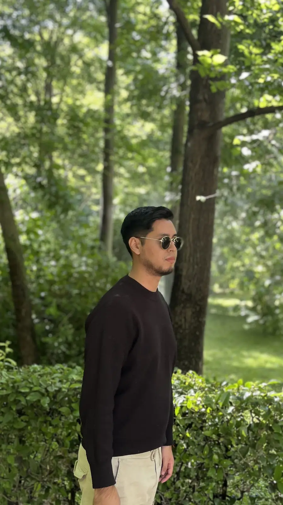
Entiendo la arquitectura como una herramienta artística que permite al ser humano relacionarse en sus tres dimensiones —material, sensible y simbólica— con el espacio que habita y consigo mismo. No proyecto objetos: proyecto formas de habitar.
Desde Arkunay desarrollo una práctica que piensa la casa como un organismo, el lugar como punto de partida y la geometría como una gramática silenciosa. Mi trabajo integra diseño residencial de campo y alta gama, visualización fotorrealista y desarrollo conceptual.
Modelado paramétrico avanzado y diseño computacional. Trabajo de Fin de Máster sobre domos hexagonales desarrollados en Rhinoceros y Grasshopper.
Formación integral en proyecto arquitectónico, teoría, técnica constructiva y representación.
Photoshop · Lumion · SketchUp. Fundamentos de la práctica de renderizado fotorrealista.
Práctica propia enfocada en diseño residencial de campo y montaña, villas, refugios y arquitectura de autor. Dirección integral del proyecto: concepto, anteproyecto, modelado, renderizado, identidad gráfica y coordinación de especialistas. Coautoría con ingenieros titulares para la firma técnica de obras en el Perú.
Dibujo arquitectónico, diseño y renderizado para proyectos hoteleros de alta gama. Elaboración de láminas de presentación a cliente, planimetría técnica y expedientes para entregas municipales. Apoyo transversal en visualización 3D y desarrollo de propuestas.
Colaboración como pasante: desarrollo de una propuesta conceptual alternativa para un proyecto residencial del estudio, modelada en ArchiCAD.
Modelado BIM eléctrico, sanitario y de data. Coordinación interdisciplinar en Revit.
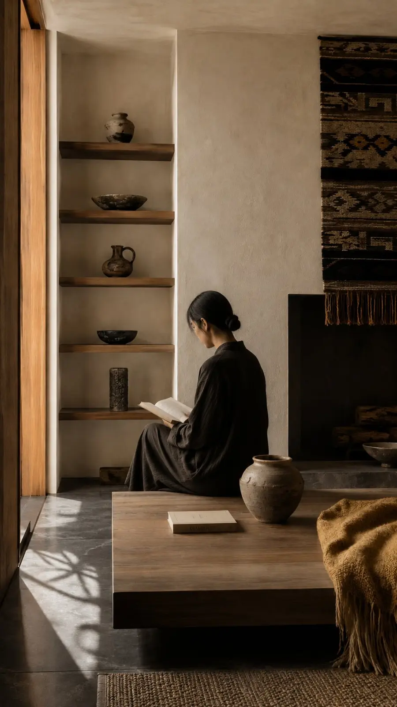
Proyectar es traducir. Antes del plano hay una pregunta: quién es el ser que va a habitar — y qué necesita su cuerpo, su afecto y su sentido del espacio que lo recibe.
No son eslóganes. Son los principios que ordenan cada decisión del estudio y permiten resolver los casos ambiguos.
No diseñamos para una imagen. Diseñamos para un ser concreto, leído con método. El proyecto responde a una persona, no a una tendencia.
Estructura, atmósfera y sentido funcionan como sistemas vivos articulados. Una decisión sobre uno repercute en los otros dos.
Cada elección de diseño puede rastrearse hasta su origen: el eje del habitante que la motivó y la lógica que la fundamenta. Sin trazabilidad no hay rigor.
La luz, el clima, la cultura y los ritmos del sitio no son restricción: son el material primero del proyecto. Arquitectura sostenida por la cultura del lugar.
La capacidad orientadora de un espacio no se mide por la cantidad de elementos simbólicos, sino por su jerarquía y su silencio.
La geometría sagrada y los trazados reguladores ordenan la experiencia sin imponerse a la vista. Una sintaxis silenciosa del habitar.
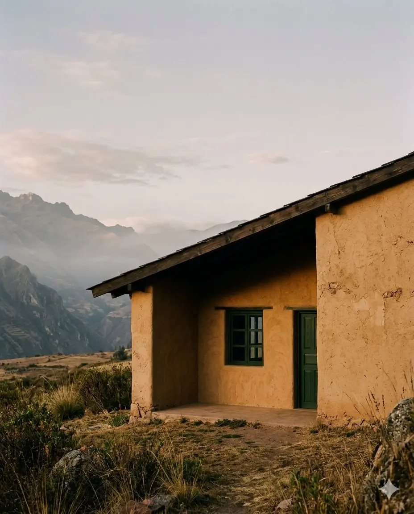
La luz de una latitud, el clima de un valle, la cultura constructiva de una región: nada de eso se combate. Se escucha y se traduce.
Una arquitectura sostenida por la cultura del lugar envejece bien porque nunca estuvo de moda.
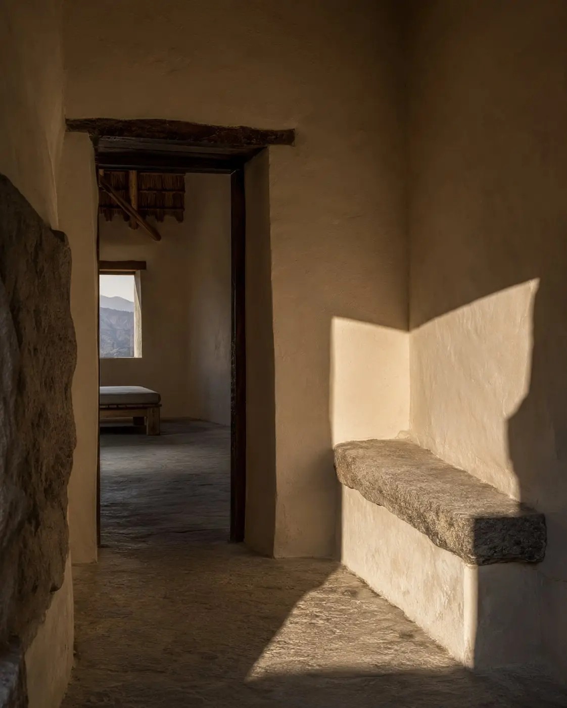
Prototipos residenciales, encargo de paisaje e investigación académica. Todos los proyectos se presentan en render conceptual; cada decisión se verifica contra la Tríada — y, en el caso piloto, contra el sistema SATO.
Tipologías residenciales y un parque diseñados como autor para Inmobiliaria Huertas. Cada casa proyecta un modo de habitar antes de conocer a su habitante — la fase intuitiva del método que SATO sistematiza.
Arquitectura agrícola de base biónica en territorio andino: la tesis de pregrado abre la pregunta en Huarochirí; el Trabajo de Fin de Máster la responde con herramientas paramétricas en el Valle Sagrado.
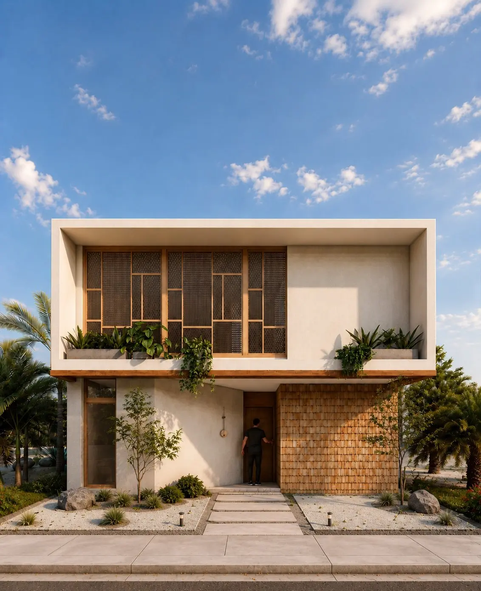
Un método que lee al habitante, traduce esa lectura a demandas espaciales y convierte cada demanda en decisiones arquitectónicas verificables. Disciplina aplicada — no recetario.
Todo proyecto que articula al habitante con el espacio enfrenta el mismo problema: la relación entre la lectura de la persona y la decisión de diseño suele quedar mediada por la intuición del proyectista. Eso produce variabilidad, impide la auditoría y abre la puerta a la racionalización retrospectiva.
SATO responde con una sintaxis estandarizada y documentable entre perfil cuantitativo y decisión arquitectónica. No anula la autoría del arquitecto: calibra la traducción inicial sobre la cual la autoría opera. El proyectista decide cómo materializa una demanda; SATO define qué demanda existe.
El sistema opera en un régimen evidence-informed: cada recomendación declara el nivel de evidencia que la sostiene y se mantiene como hipótesis verificable, no como prescripción cerrada. Su alcance es estrictamente no clínico.
Un dispositivo metodológico articulado y documentable — no una colección de intuiciones sueltas.
El instrumento devuelve al habitante una lectura de cómo se relaciona consigo mismo a través del espacio que habita.
Opera sobre los tres ejes de la Tríada Arkunay — Cuerpo, Alma y Espíritu — leídos de forma simultánea.
Del griego onto, ser, y gnosis, conocimiento experiencial: conocer al ser por la experiencia de habitar.
El Traductor es el dispositivo operativo del sistema. Cada nivel toma como entrada el resultado del anterior. La trazabilidad opera en sentido inverso: toda decisión puede remontarse al dato que la generó.
Los 42 reactivos del test se transforman mediante el método POMP (Percentage of Maximum Possible) a una escala 0–100 comparable. Sobre esos puntajes se identifica el perfil primario, el subperfil, las zonas de cada eje, la tensión y la coherencia.
El corazón del Traductor. Cada eje cruza con su capa proyectual —Cuerpo→funcional, Alma→sensorial, Espíritu→sentido, Tensión→integrativa— y su zona POMP activa una demanda específica. La demanda puede ser compensatoria, expresiva o mediadora.
Cada demanda se convierte en variables de diseño concretas con descriptores observables: distribución, luz, materialidad, jerarquía visual, umbrales, dispositivos adaptativos. Es la traducción final, la que el arquitecto lleva al proyecto.
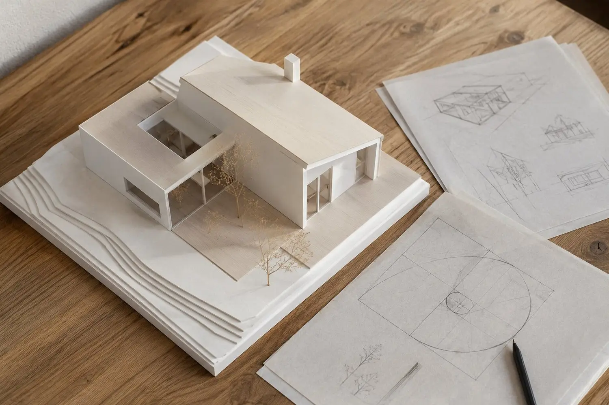
El test clasifica a cada habitante en un perfil primario según qué eje domina y por cuánto margen. Cada perfil tiene su centro de gravedad y su riesgo configuracional propio.
Habita desde la acción, la constancia y la ejecución. El espacio necesita sostener y amplificar su capacidad estructural.
Habita desde la resonancia afectiva con el entorno. El espacio debe contener y modular su sensibilidad — no amplificarla sin contención.
Habita desde la búsqueda de sentido y coherencia. El espacio articula esa búsqueda — con anclaje funcional suficiente para vivirse a diario.
Los tres ejes coexisten en zona alta con baja fricción. La intervención opera por afinación de detalle, no por transformación.
Coexistencia parcial de los tres ejes con fricción elevada. La capa integrativa se vuelve la columna vertebral del proyecto.
Subperfil. Dentro de cada perfil con dominancia, el segundo eje más alto define una subdominancia — produciendo ocho combinaciones operativas (Constructor sensible, Sensible observador, Observador constructor…). Cada subperfil ajusta finamente la prioridad de las capas en el proyecto.
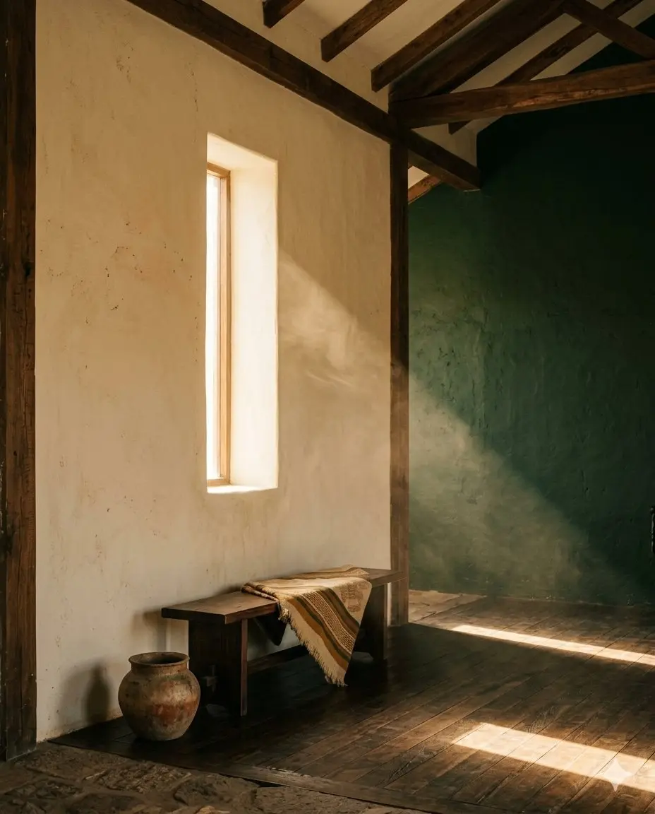
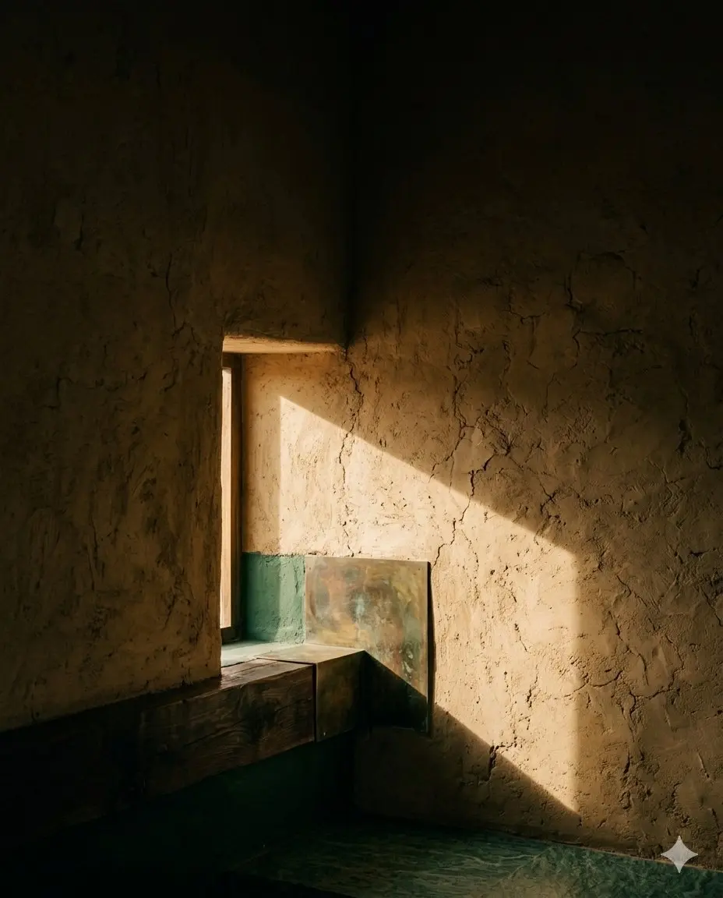
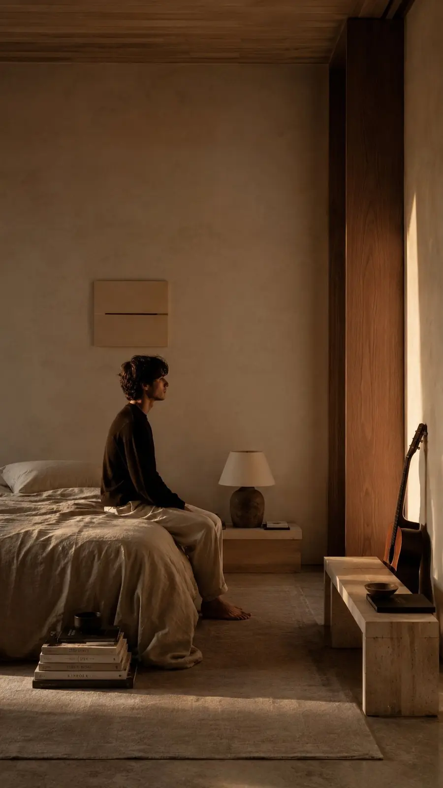
Caso piloto de validación del Traductor. Una casa de descanso costera proyectada para un habitante contemplativo. Recorremos los tres niveles sobre un caso real del estudio.
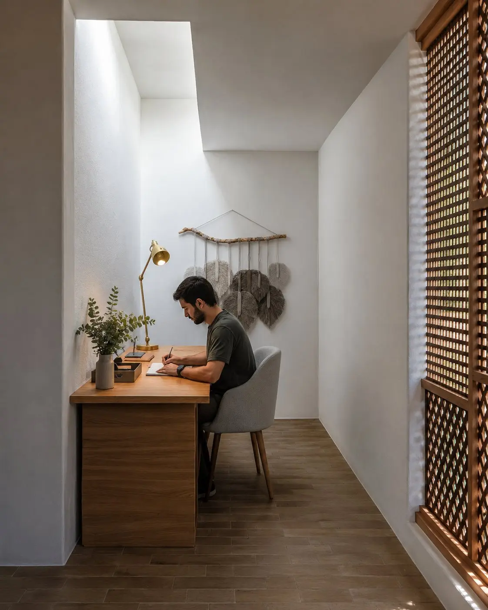
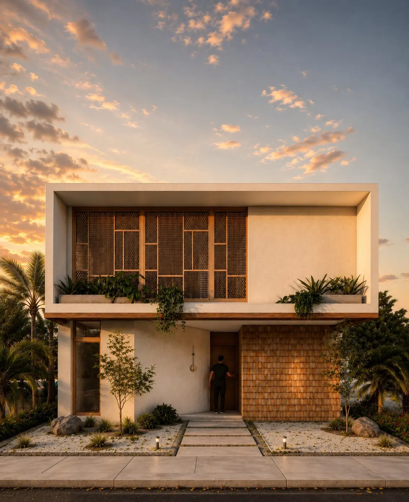
El habitante de Amawi busca privacidad y concentración, atiende al diseño de la luz, valora el espacio social y emplea la espiral áurea como regulador simbólico. Traducido a SATO:
Perfil: Integrador estable con sesgo Observador-Sensible. Espíritu y Alma en zona dominante, Cuerpo en zona alta, tensión moderada.
Capa de sentido (1ª). Expresiva — jerarquía visual, vacío significativo, umbrales rituales, relación vertical con el cielo.
Capa sensorial (1ª–2ª). Expresiva con contención — gradientes de privacidad, ritmo lumínico, materialidad envolvente.
Capa funcional (2ª). Soporte expresivo — programa que sostiene lo social y lo contemplativo sin imponer rigidez.
Capa integrativa (3ª). Activación moderada — transiciones discretas entre lo social y lo íntimo.
El vacío central de la escalera sin techo como protagonista compositivo. La claraboya sobre el escritorio. La celosía de fachada que filtra la luz y protege la intimidad. El trazado regulador sobre la espiral áurea. Sala-cocina integradas como zona social. Cada decisión, trazable a un eje y a una capa.
Las decisiones que el arquitecto tomó por juicio integrado se reconstruyen desde el Traductor con trazabilidad explícita. Esto es lo que distingue a SATO de la prescripción estilística: cada gesto tiene un porqué auditable.
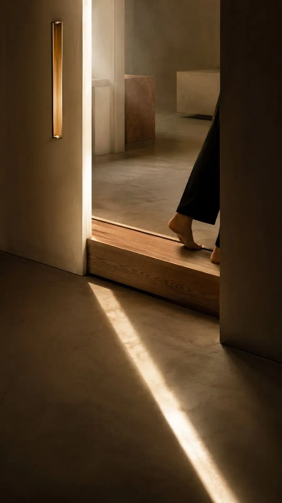
El sistema se aplica en tres niveles de profundidad, según el momento del habitante: desde la lectura inicial del perfil hasta el proyecto completo y su seguimiento posterior.
Cada paquete responde a una pregunta distinta — y todos parten del mismo principio: leer antes de trazar.
SATO se aplica en tres niveles de profundidad. Cada paquete responde a un momento distinto del habitante y del proyecto — desde la lectura inicial hasta el acompañamiento completo de obra.
La aplicación del Test SATO y su devolución profesional. El habitante recibe su perfil triádico, sus zonas por eje y una lectura interpretativa de cómo se relaciona con el espacio.
La Lectura del Habitante más el SATO-Space Audit del espacio actual y la aplicación completa del Traductor: matriz de demandas y recomendaciones de diseño por capa.
El proyecto arquitectónico completo desarrollado bajo el Traductor — desde el anteproyecto hasta la documentación, con seguimiento posterior mediante el módulo SATO-Outcome.
Alcance y uso responsableSATO es un sistema de diseño con alcance estrictamente no clínico. Sus recomendaciones operan como hipótesis de intervención provisionales, no como prescripciones. Cuando la fuente de la tensión del habitante excede la competencia del diseño arquitectónico, el protocolo se interrumpe y se orienta hacia recursos profesionales apropiados.
Una lectura de cómo te relacionas con el espacio que habitas. Cuerpo, Alma y Espíritu — y la tensión entre ellos.
Cómo responder. Para cada afirmación, indica con qué frecuencia se cumple en ti, tomando como marco las últimas cuatro semanas. La escala va de 1 (Nunca) a 5 (Siempre). No hay respuestas correctas: responde con honestidad, no con la imagen que querrías dar.
Estos datos permiten elaborar tu lectura como un estudio personalizado. Quedan registrados junto a tu perfil.
No puntúan ni alteran tu perfil. Aportan material cualitativo que enriquece la lectura. Puedes responderlos o continuar directamente.
Todo proyecto Arkunay empieza por una conversación sobre quién va a habitar. Elige la puerta que corresponde a tu momento.
Empieza por conocerte como habitante. El test es gratuito y te devuelve tu perfil triádico al instante.
Lectura, Diagnóstico o Proyecto Integral. Tres niveles de profundidad según tu momento.
¿Una casa de campo, una villa, un refugio? Cuéntame el lugar y el habitante. Conversemos.
enzomlt@gmail.com →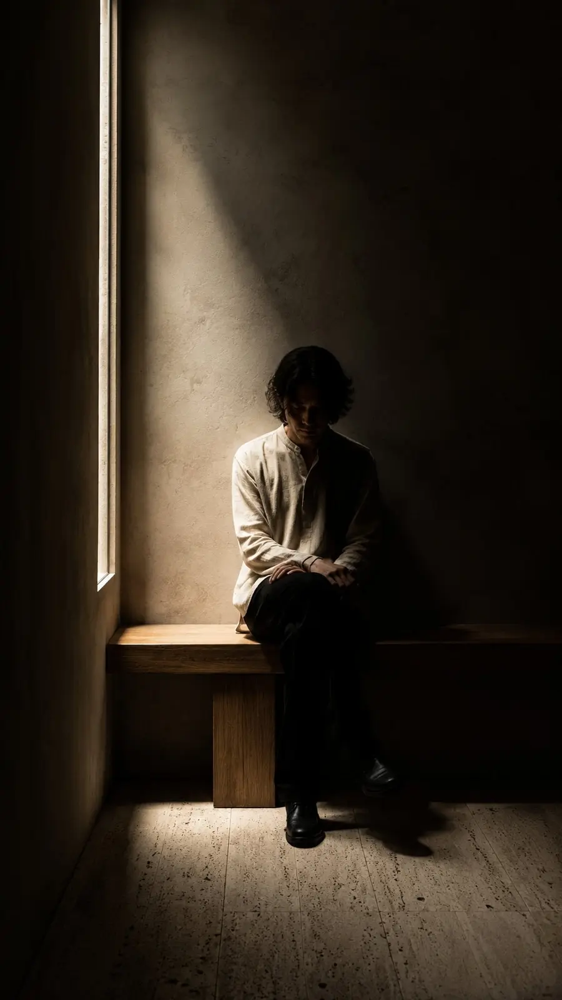